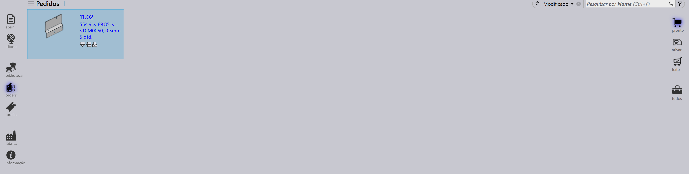
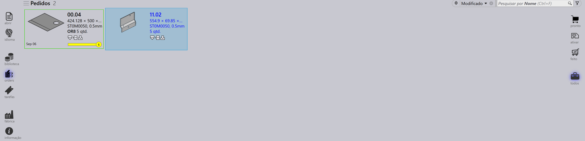

Visualização de pedidos
As opções no lado direito da página Orders representam diferentes visualizações de pedidos com base em sua etapa de processamento. Selecionar uma visualização atualiza os pedidos exibidos, permitindo que você se concentre em etapas específicas do fluxo de trabalho.
Ready
Selecionar a visualização Ready exibe os pedidos que estão preparados mas ainda não convertidos em jobs.

-
Mostra os pedidos que estão prontos para a criação de jobs.
-
Útil para identificar pedidos pendentes de processamento.
Active
Selecionar a visualização Active exibe os pedidos que foram convertidos em jobs e estão sendo processados atualmente.
-
Representa os pedidos já movidos para a etapa Job.
-
Ajuda a rastrear os pedidos que estão em execução.
-
Útil para monitorar a produção em andamento.
Done
Selecionar a visualização Done exibe os pedidos que concluíram o processamento.
-
Mostra os pedidos cujos jobs associados estão finalizados.
-
Indica que o fluxo de trabalho está completo.
-
Útil para revisão e manutenção de registros.
All
Selecionar a visualização All exibe todos os pedidos, independentemente de sua etapa.

-
Fornece uma visão geral completa de todos os pedidos.
-
Útil para pesquisar e gerenciar em todas as etapas.
Barra de status do pedido
A barra de status exibida abaixo de cada bloco de pedido indica se o pedido está vinculado a um job. Existem dois tipos:
-
Sem barra - o pedido não está atribuído a nenhum job.
-
Com barra - o pedido faz parte de um job, e a barra mostra o respectivo status do job conforme listado abaixo.
| Status do pedido | Descrição |
|---|---|
|
Não está pronto |
|
Pronto |
|
Bend Planned |
|
Chapa em falta |
|
Fila de dobra |
|
Fila de corte |
|
Feito |